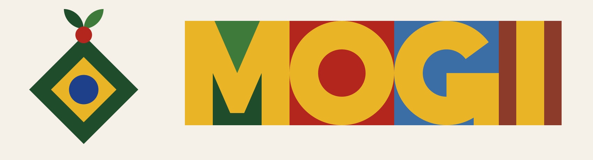

Zeladoria urbana · Itamogi-MG · Final AKCIT 28/11Viu um problema na rua? Abre o MOGI, tira a foto e pronto.
A prefeitura recebe tudo numa fila só, do mais urgente para o menos urgente.
12345
sem pressacrítico, prazo de 2 h
Vídeo gerado por IAAntes · nível 5
 Depois
Depois